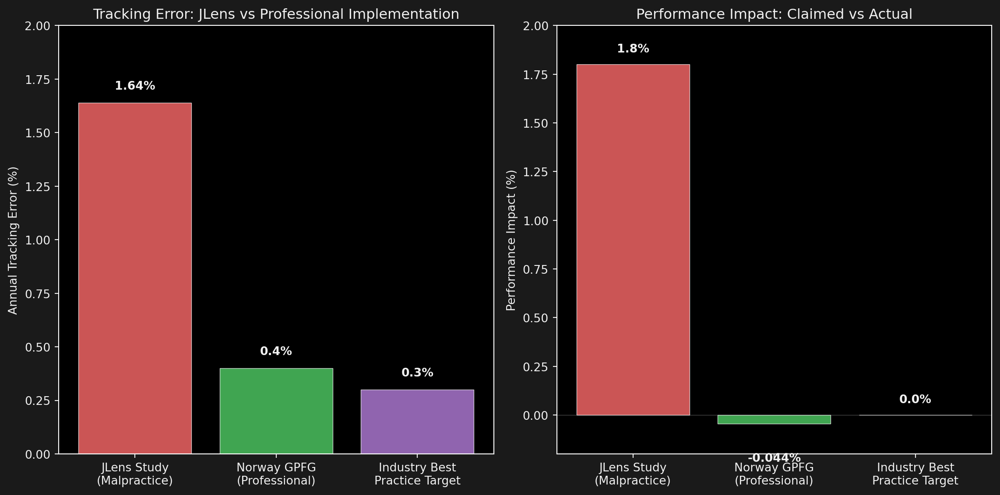
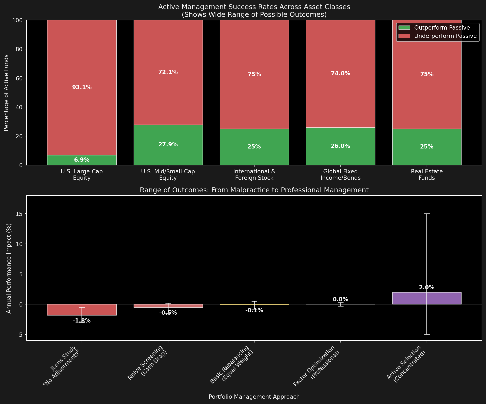

Footnotes For Fiduciaries
Stockpicking is Still Legal
Does Divestment Destroy Portfolios?
Will BDS-related divestment materially harm endowment returns?
- Recent JLens/ADL study claims $33.2 billion in foregone returns
- Huge, if true…
Today’s Goal: Separate fiduciary fact from advocacy fiction
What This Presentation Covers
- The JLens Claims - What they found, why it’s methodologically invalid
- The Croquet Problem - Why their methodology is like letting kids move the ball
- Point-in-Time Reality - Using future information to judge past decisions
- The Spectrum Truth - Why heterogeneity is freedom, not a bug
- Performance Reality - What actually happens (it’s not just Norway)
- Signal Analysis - What operating in Gaza tells us about business value
- The Hidden Costs - What NOT divesting actually costs institutions
- Implementation Guide - Concrete steps using the Norway Model
Part 1: The JLens Study Problems
Note: These aren’t minor methodological quibbles - they’re the difference between croquet and golf
Problem 0: Selection Bias
- Method: “Focused and conservative” approach excluded 38 companies
- Finding: 1.8% annual underperformance (11.1% vs 12.9% returns)
- Projection: $33.2 billion foregone over 10 years
The Selection Issue: 38 company sample represented 32% of the S&P 500
[Research note: Total companies on underlying lists >> 38, many small/private excluded from sample]
The Croquet Problem
My parents used to play a special version of croquet when I was a kid where I got to pick up the ball and put it wherever I wanted.
That kind of BDS is what JLens is testing.
- Pick your 38 favorite companies from hundreds of possibilities
- Apply 2024 knowledge to 2014 decisions
- Make “no other adjustments” to simulate incompetence
- Claim this proves something about professional divestment
Problem 1: Point-in-Time Data Failure
Applied 2024 exclusion list to entire 2014-2024 period
The Organizations Cited Didn’t Exist: - Don’t Buy into Occupation Coalition: Formed January 2021 - OHCHR Database: First published February 2020 - AFSC Investigate: Launched 2019
The Point-in-Time Problem: Real investors make decisions with information available at the time, not with perfect hindsight. This isn’t a small detail - it’s the difference between research and fantasy.
Problem 2: Statistical Malpractice
- “38 companies excluded and no other adjustments made”
- Tracking error of 1.64% - essentially equals claimed underperformance
- No rebalancing, optimization, or professional management
Key Insight: JLens’s tracking error (1.64%) explains 91% of their claimed underperformance - proving they modeled incompetent execution, not divestment impact.
The Study Cannot Be Replicated
JLens won’t disclose: - Data sources - Rebalancing methodology - What “no other adjustments” means - How they weighted remaining holdings
Non-replicable results are invalid in both academic and investment contexts.
Part 2: The Spectrum Truth
Institutional heterogeneity isn’t a problem - it’s free will. They fought a whole war in heaven over it.
The Wide World of Active Management

Why Institutional Heterogeneity is a Feature
- Active stock-picking: Concentrated portfolios, embrace tracking error, skill-based returns
- Optimized indexing: Factor-neutral rebalancing, minimal tracking error
- Screened benchmarks: Purpose-built indexes with exclusions built-in
- Overlay strategies: Third-party optimization on top of existing managers
The beauty: Institutions can choose approaches that match their mission, risk tolerance, and stakeholder expectations. This isn’t a bug - it’s freedom.
The Active Management Reality
Fiduciaries are clutching their pearls about tracking error with divestment…
…while happily signing up for much worse outcomes with traditional active management
- 70-93% of active equity managers underperform their benchmarks
- Yet boards routinely approve active management with higher fees and worse outcomes
- Active management = making conscious choices about what to own AND what not to own
- I’m an active manager when I pick good stocks AND when I pick not to own bad ones

“Wait, divestment is just active management?” “Always has been.” 🔫
The Control Difference
With divestment, you can actually exercise control over externalities:
- Geopolitical risk management through exclusions
- Stakeholder alignment through values-based screening
- Long-term risk mitigation through conduct criteria
By contrast, commodity trend analysis is astrology for men
The Point: Both divestment and traditional active management are forms of active portfolio management. The difference? Divestment lets you manage risks you can actually identify and control.
As I often tell prospects: The choice really is whether they want to keep their brains smooth or engage with the things that are troubling them.
Part 3: Performance Reality Check
It’s Not Just Norway
A significant percentage of NACUBO institutions already use ethical screening
Professionally managed exclusions track benchmarks within basis points, not percentage points.
Institutional Scorecard
| Institution | Assets | Scope | Return Impact | Risk Controls |
|---|---|---|---|---|
| NBIM (Norway) | $1.4T | 180+ exclusions | +0.44% cumulative | Tracking error 0.3–0.5% |
| UC Regents | $126B | Fossil fuel divestment | “Financial risk management” | Consultant oversight + phased exit |
| PFZW / KLP | $200B+ | Settlement exclusions | Neutral-to-positive | Vendor optimization + quarterly reviews |
| Many NACUBO Members | $XXX | Various screens | Ongoing success | Professional implementation |
Academic Evidence
- Trinks & Scholtens (2018): 90 years of data - divestment “does not significantly impair financial performance”
- EDHEC (2023): Professional optimization reduces tracking error by 80-90%
- Plantinga & Scholtens (2021): 40-year study finds differences of “a few basis points”
Why Naïve Studies Fail
- Static lists applied retroactively ignore point-in-time information sets
- “No other adjustments” = fiduciary malpractice (cash drag, sector concentration)
- Tracking error parity with claimed losses proves the model was incompetent
Part 4: Signal Analysis
Specialist vs Commercial Sources
Two Types of Information Sources:
- Commercial/Academic: Broad market analysis, backward-looking, profit-motivated
- Specialist/Activist: Deep sector expertise, forward-looking, mission-driven
The Question: Which source better identifies emerging risks and opportunities in complex geopolitical situations?
The Gaza Signal
The Business Value Question: If operating in Gaza is worth it to a company despite:
- Massive reputational risks
- Stakeholder backlash
- Operational complexity
- Regulatory scrutiny
Then how much is their business really worth?
The Signal: Companies that continue high-risk operations may be signaling that their business model depends on activities that create long-term stakeholder conflict.
Part 6: The Norway Model Framework
How boards can implement exclusions without breaching fiduciary duty
Why Boards Need This Framework
- Turns “divest” into a governance motion with tracking-error discipline
- Shows trustees how to deliver exclusions without breaching prudence
- Mirrors how NBIM, PFZW, and UC Regents structure conduct screens
Core Decision Framework
1. Mandate & Guardrails
- Adopt written conduct criteria referencing international law + credible evidence sources
- Set tracking-error budget (≤30 bps) and require factor/sector neutrality
- Delegate execution to CIO/consultants while retaining policy oversight
2. Phased Implementation
- Immediate: Stop new purchases, log current exposure
- 30-60 days: Exit via orderly trading schedule (avoid divestment shock)
- Quarterly: Certify reinvestment into benchmark-aligned replacements
3. Reporting & Transparency
- Publish exclusion rationale, evidence citations, and guardrails
- Require quarterly one-page dashboards (tracking error, factor exposure, progress)
- Create appeals/exception process with time limits and public log
Implementation Practices that Preserve Returns
- Set explicit tracking-error guardrail (≤30 bps) and require factor/sector neutrality
- Reinvest promptly to avoid cash drag; use screened indexes or optimization overlays
- Phase trades (30–60 days) with compliance sign-off to avoid market impact
- Monitor via quarterly analytics (tracking error, factor deltas, contribution to return)
Part 7: Implementation Checklist
For Board Members & Trustees
Evidence You Can Cite
- NBIM (Norway) 2024 Report – 0.3–0.5% tracking error; exclusions added +0.44% cumulative return
- UC Regents 2020 Fossil Fuel Divestment – expressly labeled “financial risk management”
- EDHEC 2023 Optimization Study – professional rebalancing cuts tracking error by 80–90%
- NACUBO Experience – significant percentage already using ethical screens successfully
Fiduciary Considerations
- Risk Management: Can exclusions be implemented within acceptable tracking error limits?
- Professional Implementation: Will portfolio management employ optimization techniques?
- Stakeholder Alignment: How do exclusions align with institutional mission?
- Performance Monitoring: What governance ensures ongoing assessment of impact?
- Hidden Cost Assessment: What are the costs of NOT acting?
For Staff Implementation
- Update IPS / investment policy statement with conduct language + tracking error budget
- Instruct index/active managers to load exclusion list + optimization constraints
- Coordinate consultant to run pre/post analytics (tracking error, factor tilts, liquidity)
- Document phased trade plan and compliance attestations
- Schedule annual policy review plus event-driven updates
Minimum Standards for Future Studies
Any credible analysis of divestment impacts should include:
- Point-in-time exclusion lists reflecting realistic investor experience
- Full methodological transparency enabling independent replication
- Multiple implementation scenarios from naive to professionally optimized
- Multi-period analysis avoiding cherry-picked market regimes
- Total cost analysis including stakeholder relationship impacts
Conclusion
The JLens Study is Invalid Because
- The Croquet Problem - they got to move the ball wherever they wanted
- Point-in-time failure - used future information to judge past decisions
- Implementation malpractice - approach would expose fiduciaries to legal liability
- Non-replicable methodology - cannot be verified by third parties
- Ignores hidden costs - doesn’t account for stakeholder relationship damage
What We Know from Real Evidence
- Norway ($1.4T): +0.44% from exclusions with 0.3-0.5% tracking error
- UC System ($126B): Successful divestment as “risk management”
- NACUBO Members: Many already using screens successfully
- Academic consensus: Impact measured in basis points, not percentage points
- Professional management: Wide spectrum of approaches, most successful
For Fiduciaries: The Path Forward
Use the Norway Model framework to implement exclusions professionally:
- Set tracking error guardrails (≤30 bps)
- Require factor-neutral optimization
- Phase implementation over 30-60 days
- Publish transparent reporting
- Monitor quarterly with professional analytics
- Consider total costs - not just hypothetical performance impacts
Bottom Line: Any trustee considering the JLens study should demand complete methodology disclosure and comparison with actual institutional implementations.
About This Analysis
About Ethical Capital
- Utah registered investment adviser
- Specializes in concentrated ethical portfolios (we embrace tracking error)
- Contact: hello@ethicic.com • +1 (347) 625 9000
- Screening policy: https://ethicic.com/content/process/screening-policy
About Dryvestment
- Ethical Capital’s Labs experiment
- “Google translate” for activists and fiduciaries
- Produces educational briefs only—no individual investment advice
- All outputs versioned and updated as research evolves
This analysis is provided to support evidence-based policy discussion. We welcome transparency from any party to enable replication and verification.
Thank You
Questions?
For more resources: - Full technical analysis available - Implementation templates for boards - Contact: hello@ethicic.com